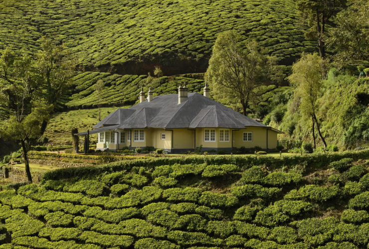
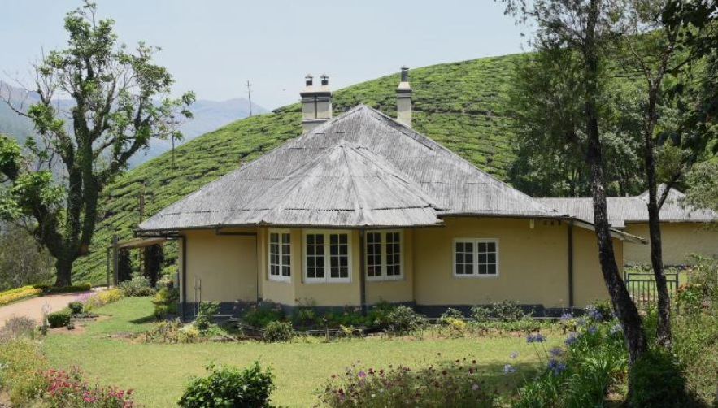

Sholamallay Bungalow is a historic bungalow located in the scenic hills of Idukki district, Kerala. Built during the British plantation period, the bungalow is surrounded by tea estates, forests, and rolling hills. Its traditional architecture and peaceful surroundings make it an attractive destination for visitors who enjoy history and nature.
The bungalow offers a glimpse into the colonial heritage of Kerala's high ranges. Visitors can enjoy the cool climate, beautiful landscapes, and quiet atmosphere around the property. Sholamallay Bungalow is an ideal place for photography, sightseeing, and experiencing the rich plantation history of Idukki.


Sholamallay Bungalow is a historic colonial bungalow located in the beautiful tea plantations of Nullatanni Estate near Munnar in Idukki District, Kerala. Built in 1895, it was originally the residence of British tea estate managers. Today, it is a heritage bungalow that offers visitors a peaceful stay surrounded by tea gardens and scenic mountain views. 1
The bungalow was built in 1895 during the British colonial period. It served as the residence of tea plantation managers of the Kannan Devan Hills plantations. The heritage building has been carefully preserved and continues to reflect the charm of colonial architecture. 2
Sholamallay Bungalow features classic British colonial architecture with wooden floors, spacious rooms, fireplaces, large windows and wide verandas overlooking the tea gardens. The heritage design has been preserved while providing modern comforts. 3
The bungalow is surrounded by lush tea estates, flowering plants, ornamental trees and native vegetation of the Western Ghats, creating a peaceful natural environment.
Today, Sholamallay Bungalow is a popular heritage accommodation in Munnar. Visitors enjoy its colonial architecture, peaceful surroundings, tea plantations and the unique experience of staying in a century-old bungalow. 4